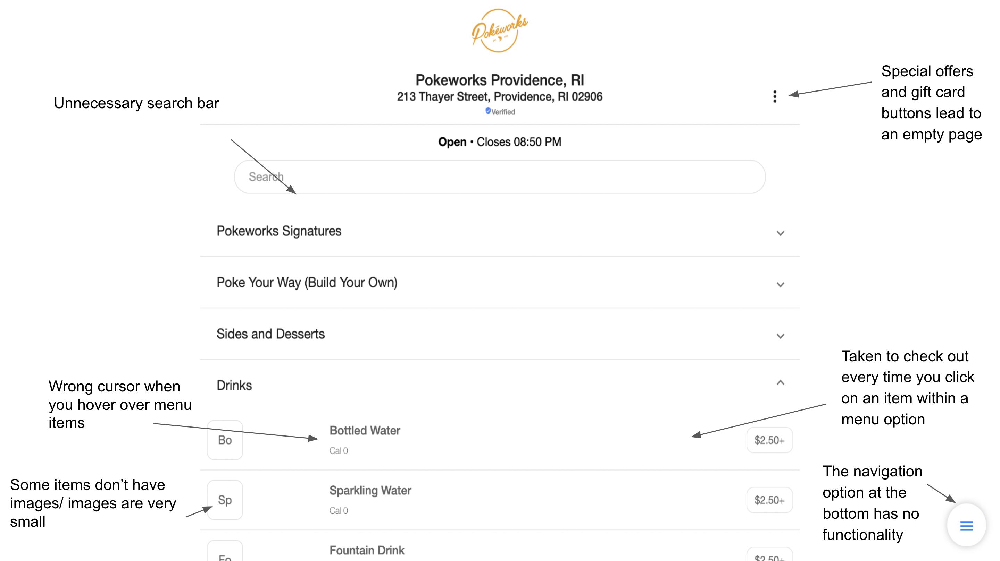
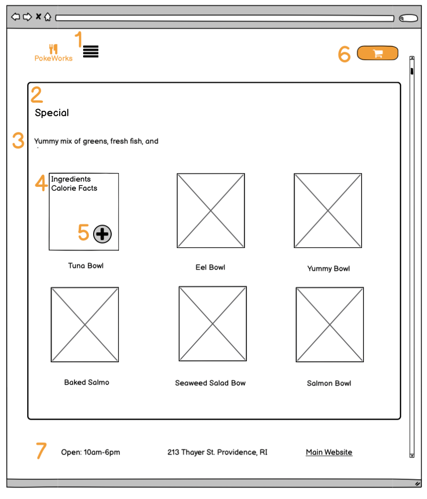
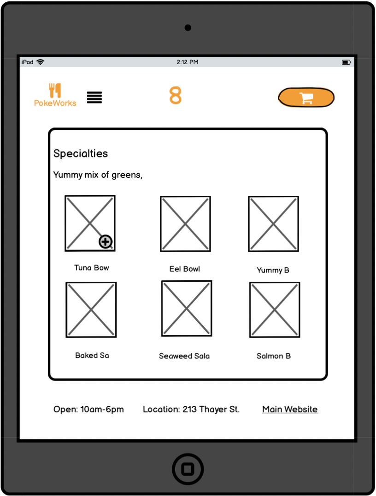
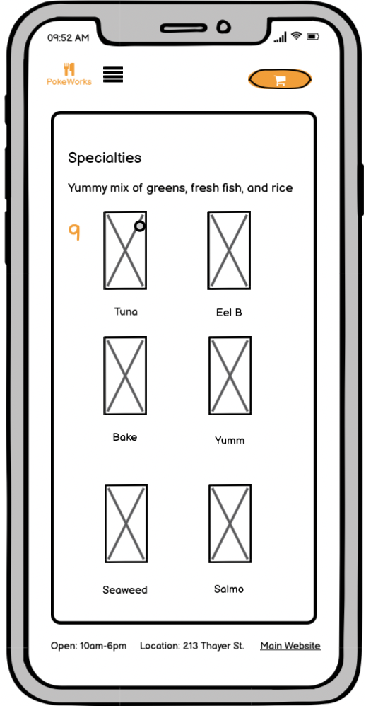
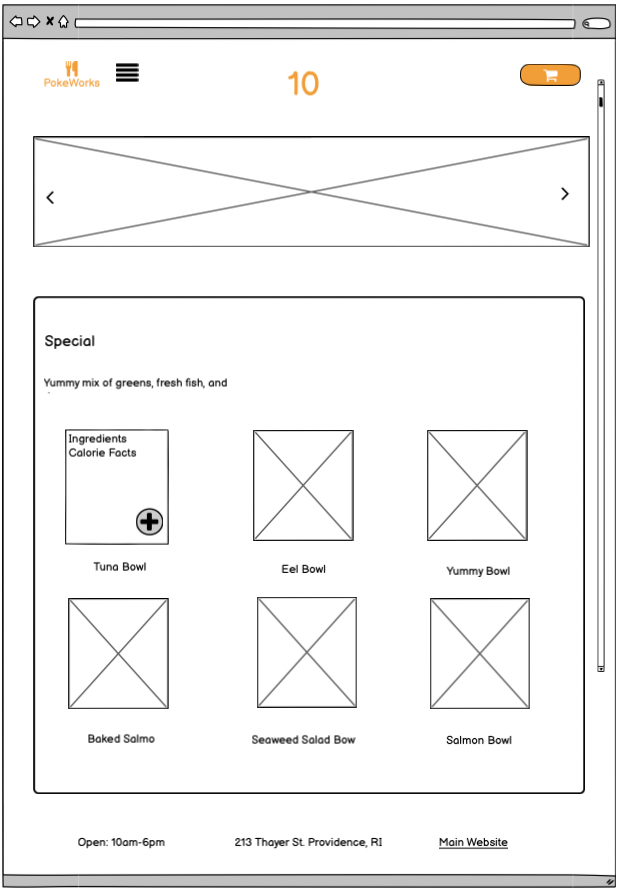

The accessibility evaluation tool identified two main problems with the poke works Thayer restaurant. The first problem is the website doesn’t have any page regions defined which means only divs were used for styling and not “header, footer, nav, body, aside, …”. Page regions help structure the website and give a clean design. Secondly, the website does not contain any headers (h1, h2, …). Without a clear header structure, it is difficult to create a clean layout for the web page.
Link to original website




- I changed the icon of the original navigation and placed it next to the logo to clarify its functionality.
- There are only six items per category, so I removed the drop-down option and made all of the items visible from the initial page. I group each menu option in a rounded rectangle of different colors to differentiate the menu options.
- Added a short description of each menu option.
- To make the website look cleaner I overlayed the ingredients and calories on top of the image. To view the ingredients and calories you must tap on the item (user is prompted by the pointer cursor).
- Option to add the item to the cart. I originally wanted to use this same functionality but for mouse hovering, but this would not allow iPhone and iPad users to add the item to their cart so I opted for click functionality.
- There is no shopping cart until you add an item on the original page. The shopping cart is also very large and positioned at the bottom of the screen. To improve useability and appearance I use a shopping cart icon and place it in the top right hand corner similar to how most shopping websites funciton.
- The original website does not include a footer and instead puts this information below the icon. I decided that it looks much cleaner at the bottom of the page.
- I keep the same design as the web page for the iPad because it will save me lots of time and it will maintain the same look.
- For the iPhone I changed the
- My design process consisted of multiple iterations of lofi designs followed by fewer hifi edits and finally changes to the actual web page. I repeated this process multiple times until I arrived at my final design. This image was going to be my final design but I came to the conclusion that the slide show at the top wasn't assisting in useability at all.